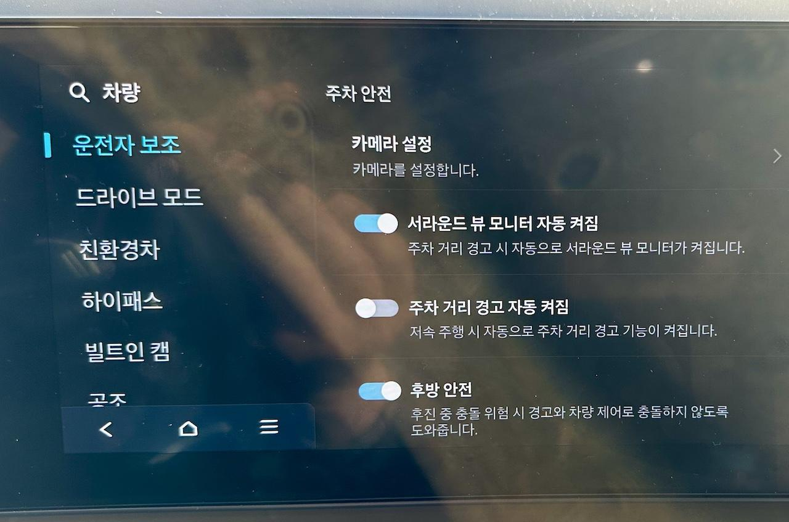

주차나 저속 주행 시 어라운드 뷰가 자동으로 뜨게 할 수는 없을까?
어라운드 뷰(around view)는 차량을 외부나 위에서 보는 것처럼 표시해줘서 주변 장애물을 피할 때나 좁은 길을 주행할 때 혹은 주차할 때 도움을 주는 기능이다. 개인적으로는 특히 좁은 주차장 길을 지나가야 할 때 자주 사용한다. 옵션이긴 하지만 정말 잘 넣은 옵션이라고 아직도 생각된다. 누군가는 서라운드 뷰(surround view)라고 표현하기도 하는데 의미상 틀린 건 아니지만 공식 명칭은 아닌 듯하다.
그래서인지 어떤 때는 이 어라운드 뷰가 자동으로 떴으면 하는 바램이 있다. 예를 들어 아주 천천히 갈 때는 화면 절반 정도만 어라운드 뷰로 자동으로 전환되었으면 얼마나 편할까? 이와 관련된 정보를 정리해 보자.
참고로 이 글은 투싼 하이브리드 페이스리프트(NX4 HEV PE) 기준이다.
혹시 주차 시 혹은 저속 주행 시 어라운드뷰가 자동으로 뜨게 할 수는 없을까?
답: 없다.
명쾌한 해답이긴 하다. 아무리 매뉴얼을 뒤져봐도, 아무리 차 안에서 설정을 뒤져봐도 이런 건 없었다.
어쨌거나 이런 기능은 제조사에서 구현을 고려해 줬으면 좋겠다. 그 넓은 화면 좀 잘 활용할 수 있으면 참 좋을 텐데 말이다.
대신 대안이 있었다
완전한 자동은 아니지만 몇 가지 설정을 통해 특정 조건으로 어라운드 뷰가 자동으로 켜지게 하는 설정을 찾을 수 있었다.
ccNC를 통해 아래와 같은 항목으로 들어가 보자.
SETUP - 운전자보조 - 주차안전
여기에서 아래 사진과 같이 몇 가지 도움이 되는 설정을 찾을 수 있다.
 주차안전 관련 설정들
위 사진에서 '서라운드 뷰 모니터 자동 켜짐' 설정과 '주차 거리 경고 자동 켜짐' 설정의 설명을 잘 읽어보자. 이 두 설정을 켜면 저속 주행 시 주차 거리 센서가 자동으로 켜지고 이 주차 거리 센서가 울리게 될 정도로 장애물과 접촉하게 되면 어라운드 뷰가 자동으로 켜진다는 말이 될 거다.
아마도 이 정도만 되어도 어느 정도 도움은 되지 않을까?
다만 설정은 해 두고 실제로 생각대로 동작하는지 확인은 아직 못 해본 상황이다. 애초에 투싼이 큰 차는 아니어서 운전하기 쉽기도 하고, 생각보다 체감 거리 측정을 잘 하고 있기도 한 모양이다. 뭐 좋게 생각해도 될 것 같다.